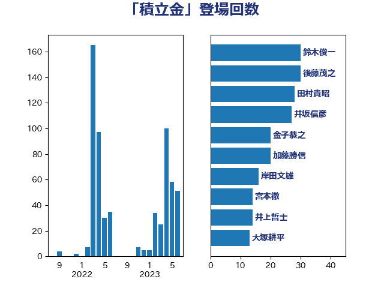

単語「積立金」

| 鈴木俊一 | 自由民主党 | 30 回 |
| 後藤茂之 | 自由民主党 | 30 回 |
| 田村貴昭 | 日本共産党 | 28 回 |
| 井坂信彦 | 立憲民主党 | 27 回 |
| 金子恭之 | 自由民主党 | 20 回 |
| 加藤勝信 | 自由民主党 | 20 回 |
| 岸田文雄 | 自由民主党 | 16 回 |
| 宮本徹 | 日本共産党 | 14 回 |
| 井上哲士 | 日本共産党 | 14 回 |
| 大塚耕平 | 国民民主党 | 13 回 |
| 田中健 | 国民民主党 | 12 回 |
| 高木宏壽 | 自由民主党 | 11 回 |
| 川田龍平 | 立憲民主党 | 11 回 |
| 伊藤岳 | 日本共産党 | 9 回 |
| 奥野総一郎 | 立憲民主党 | 8 回 |
| 斉藤鉄夫 | 公明党 | 7 回 |
| 塩村あやか | 立憲民主党 | 7 回 |
| 梅村聡 | 日本維新の会 | 6 回 |
| 宮本岳志 | 日本共産党 | 6 回 |
| 大西健介 | 立憲民主党 | 6 回 |
| 阿部知子 | 立憲民主党 | 5 回 |
| 若松謙維 | 公明党 | 5 回 |
| 羽生田俊 | 自由民主党 | 5 回 |
| 米山隆一 | 立憲民主党 | 5 回 |
| 末松義規 | 立憲民主党 | 5 回 |
| 室井邦彦 | 日本維新の会 | 5 回 |
| 伊佐進一 | 公明党 | 5 回 |
| 道下大樹 | 立憲民主党 | 4 回 |
| 西岡秀子 | 国民民主党 | 4 回 |
| 福山哲郎 | 立憲民主党 | 4 回 |
| 浜田聡 | NHK党 | 4 回 |
| 柳ヶ瀬裕文 | 日本維新の会 | 4 回 |
| 小池晃 | 日本共産党 | 4 回 |
| 守島正 | 日本維新の会 | 4 回 |
| 吉田久美子 | 公明党 | 4 回 |
| 今枝宗一郎 | 自由民主党 | 4 回 |
| 三木圭恵 | 日本維新の会 | 4 回 |
| 長浜博行 | 無所属 | 3 回 |
| 西村康稔 | 自由民主党 | 3 回 |
| 緑川貴士 | 立憲民主党 | 3 回 |
| 浜口誠 | 国民民主党 | 3 回 |
| 山田勝彦 | 立憲民主党 | 3 回 |
| 小野泰輔 | 日本維新の会 | 3 回 |
| 堂込麻紀子 | 無所属 | 3 回 |
| 吉田統彦 | 立憲民主党 | 3 回 |
| 吉田はるみ | 立憲民主党 | 3 回 |
| 倉林明子 | 日本共産党 | 3 回 |
| 住吉寛紀 | 日本維新の会 | 3 回 |
| 鈴木義弘 | 国民民主党 | 2 回 |
| 金子道仁 | 日本維新の会 | 2 回 |
| 船橋利実 | 自由民主党 | 2 回 |
| 稲津久 | 公明党 | 2 回 |
| 福田昭夫 | 立憲民主党 | 2 回 |
| 浅田均 | 日本維新の会 | 2 回 |
| 森屋隆 | 立憲民主党 | 2 回 |
| 小倉將信 | 自由民主党 | 2 回 |
| 大野泰正 | 自由民主党 | 2 回 |
| 高橋千鶴子 | 日本共産党 | 1 回 |
| 長妻昭 | 立憲民主党 | 1 回 |
| 重徳和彦 | 立憲民主党 | 1 回 |
| 赤羽一嘉 | 公明党 | 1 回 |
| 谷田川元 | 立憲民主党 | 1 回 |
| 角田秀穂 | 公明党 | 1 回 |
| 藤木眞也 | 自由民主党 | 1 回 |
| 藤岡隆雄 | 立憲民主党 | 1 回 |
| 萩生田光一 | 自由民主党 | 1 回 |
| 自見はなこ | 自由民主党 | 1 回 |
| 笠井亮 | 日本共産党 | 1 回 |
| 竹内真二 | 公明党 | 1 回 |
| 石田昌宏 | 自由民主党 | 1 回 |
| 石井拓 | 自由民主党 | 1 回 |
| 石井啓一 | 公明党 | 1 回 |
| 田村智子 | 日本共産党 | 1 回 |
| 田島麻衣子 | 立憲民主党 | 1 回 |
| 牧山ひろえ | 立憲民主党 | 1 回 |
| 浜田靖一 | 自由民主党 | 1 回 |
| 浅野哲 | 国民民主党 | 1 回 |
| 木村英子 | れいわ新選組 | 1 回 |
| 掘井健智 | 日本維新の会 | 1 回 |
| 岩渕友 | 日本共産党 | 1 回 |
| 山添拓 | 日本共産党 | 1 回 |
| 山崎正恭 | 公明党 | 1 回 |
| 大石あきこ | れいわ新選組 | 1 回 |
| 吉良よし子 | 日本共産党 | 1 回 |
| 古賀篤 | 自由民主党 | 1 回 |
| 古賀之士 | 立憲民主党 | 1 回 |
| 加藤鮎子 | 自由民主党 | 1 回 |
| 井上英孝 | 日本維新の会 | 1 回 |
| 串田誠一 | 日本維新の会 | 1 回 |
| 中川康洋 | 公明党 | 1 回 |